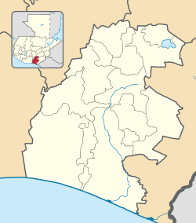
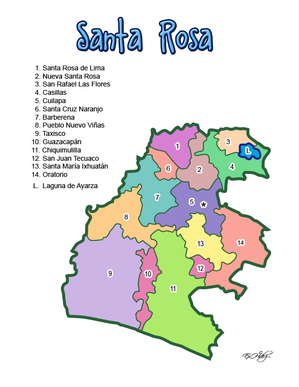

División Política
Santa Rosa es un departamento de la República de Guatemala, que se encuentra situado en la región sureste del país. Tiene una extensión territorial de 2955 kilómetros cuadrados y su población es de aproximadamente 332 724 personas según la Encuesta Nacional de Condiciones de Vida (2006). Cuenta con 14 municipios y su cabecera departamental es Cuilapa.
Santa Rosa limita al norte con el departamendo de Gautemala y Jalapa, al este con Jutiapa, al sur con el Océano Pacífico y al oeste con el departamento de Escuintla. El idioma pipil ha desaparecido por completo y el xinca aún es recordado por pocos ancianos entre la población de los municipios de Chiquimulilla, Guazacapán y Santa María Ixhuatán. En consecuencia, el idioma que se habla en todo el departamento es el español. La fiesta titular de este departamento se celebra el 25 de diciembre. Su fundación fue en 1852.
clima:
los 14 municipios son:

